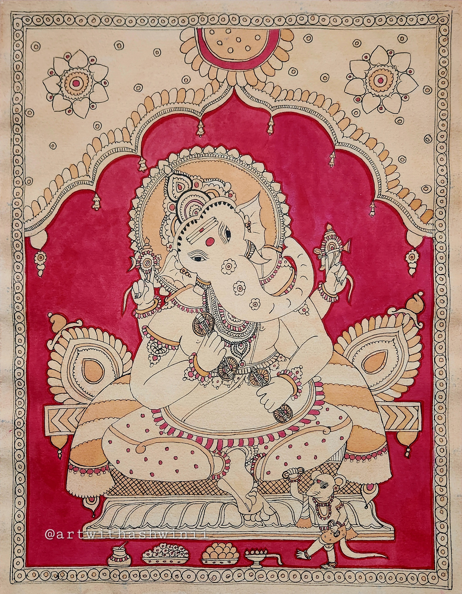
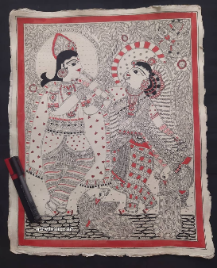
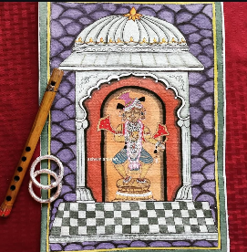

One sample work per art form I practice — added week by week as I go. Each piece is a study, a practice, or a moment of getting lost in the making.



Ten years of teaching and art, and counting — this gallery will grow to hold the journey.
Some pieces are more than a deity or a motif — they carry a specific story, a moment of devotion, that's worth explaining rather than leaving to a caption.
This moment from the Bhagavata Purana captures the transition from cosmic chaos to divine peace, marking the establishment of Krishna's title as Govinda — the protector of cows and the supreme lord.
Indra's Surrender: The king of heaven, stripped of his pride, realizes that his absolute cosmic power is subordinate to the supreme love shared between Krishna and his devotees.
Airavata's Abhishek: The multi-tusked celestial elephant pours the sacred, purifying waters of the heavenly Ganga, signifying gratitude to Krishna for forgiving Indra.
Kamadhenu's Milk: The wish-fulfilling cow, the ultimate source of nourishment, bathes Krishna in milk to symbolize the earth's gratitude and the supreme protection of cows (Go-raksha).
The Animals of Vrindavan: The dancing peacocks highlight that Krishna's divinity is not only revered by gods, but intimately loved by the simplest creatures of nature.
Sammohana Krishna is a rare, combined divine form of Lord Krishna and his consort — usually Rukmini or Radha — blended into a single deity, similar to the Ardhanarishvara form of Shiva and Parvati. It symbolizes perfect divine love, marital harmony, and beauty.
The deity stands in a Tribhangi (three-bend) posture, the right side representing Krishna and the left representing Rukmini, with eight arms holding a conch, discus, lotus, flute, and a bow made of sugarcane. Worshipping Sammohana Krishna, and chanting the Sammohana Krishna Stotram, is believed to help find a compatible life partner, resolve marital disputes, and bring harmony to family life.
A dedicated shrine to this rare form — also known as Sri Sammohana Gopalan — is at the Sri Kalyana Prasanna Venkataramanar Temple in Mohanur, Tamil Nadu.
Matsya is the first incarnation of Lord Vishnu in the Dashavatara, taking the form of a fish to retrieve the stolen Vedas, defeat a demon, and save humanity from a great cosmic flood.
The story begins with the demon Hayagriva stealing the Vedas from a sleeping Brahma, plunging the cosmos into darkness and setting in motion a great, purifying deluge. The pious King Satyavrata saves a small, magical fish that grows exponentially, revealing itself as Vishnu and warning the king of the coming cosmic destruction.
Following Vishnu's instructions, the king gathers the Saptarishis, seeds, and animals onto an ark, towed through the floodwaters by the giant fish Matsya, who uses the serpent Vasuki to secure the vessel. During the voyage, Vishnu reveals deep spiritual truths to the sages and recovers the Vedas by defeating Hayagriva in battle. Once the waters recede, the Vedas are returned to Brahma, and Satyavrata becomes the Manu of the new creation — marking the restoration of cosmic order.
Before the Kurukshetra War, Krishna traveled to Hastinapur as a peace emissary for the Pandavas. Duryodhana invited him to a lavish royal feast, but Krishna refused — one eats at another's home only out of distress or out of love, he said, and Duryodhana offered neither. Instead, Krishna went to the humble home of Vidura, the prime minister renowned for his righteousness and devotion.
Vidura was away, refusing royal luxury himself in solidarity with the exiled Pandavas — he and his wife Sulabha ate only coarse grains and wild greens while the Pandavas wandered the forest. When Krishna knocked, Sulabha answered, overwhelmed with joy at the Lord's unannounced arrival. Krishna sat down and said he was hungry.
Flustered and lost in devotion, Sulabha reached for a bunch of bananas — but entranced by Krishna's smile, she lost herself completely. She peeled a banana, dropped the fruit on the floor, and handed Krishna the empty peel. Krishna ate it with absolute relish, saying nothing, because the offering was seasoned with pure love.
When Vidura returned and saw what had happened, he was horrified and quickly offered Krishna the actual fruit. But Krishna only smiled — the fruit, he said, could never taste as sweet as the peels his wife had offered out of pure, untainted love.